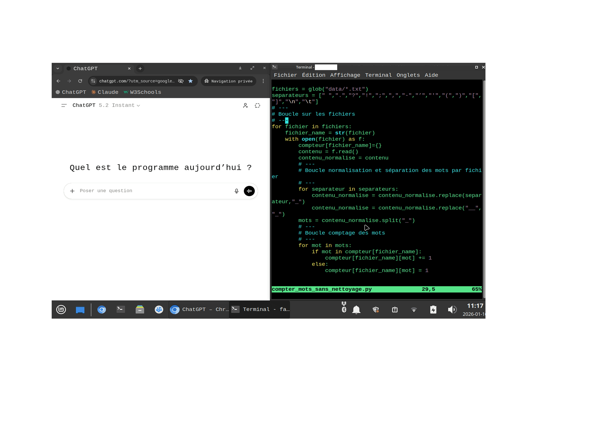

Mon ‘stack low tech’ pour faire des Humanités numériques
Pour faire du développement informatique, il n’est pas nécessaire de casser sa tirelire.
Il suffit de recycler un vieil ordinateur et d’utiliser des logiciels libres et gratuits.
Mon matériel a une valeur de moins de 200€ (et encore):
- un MacBook Pro de 2012 (valeur ~150€ sur Le bon coin, mais gratuit car il traînait dans un tiroir)
- une souris sans fil (valeur neuve ~20€)
- une clé wi-fi (valeur neuve ~15€)
Pour le ressusciter, j’ai effectué une migration sur un système d’exploitation Linux.
Contrairement à MacOS et Windows, avec Linux, l’obsolescence ne fait pas partie du business-plan.
Il existe des “distributions” Linux aussi belle et ergonomique que les dernières versions de Windows et MacOS.
Limites de la résurrection
Mais pour un ordinateur-zombie, il vaut mieux aimer un design ‘vintage’. Back to 2000 !
Parce que la mémoire de l’ordinateur est ancienne et moins puissante, un système et des applications légères doivent être installés.
Mais bon, un navigateur web (google docs, chatgpt, sncf.fr, et tout ça) et de la bureautique de base (libreoffice fonctionnent parfaitement. Certaines applications libres sont même meilleures.
L’ordinateur-zombie pouvant me lâcher à tout moment, je n’enregistre rien dessus. Une partie de mes fichiers sont maintenant sur Dropbox.
Quant à la batterie, elle a une autonomie de 2h environ. Mais cet ordinateur n’a jamais été nomade: 2,5 kg, c’est bien pour des haltères pas pour un ordinateur portable.
J’ai aussi perdu le confort de l’environnement total d’Apple: MacBook, iPhone, iPad, tout connecté comme une seule machine. Cet environnement est fondé sur iCloud. Dropbox compense en partie.
J’ai enfin dû investir dans une souris sans fil et dans une clé wi-fi.
Disons que c’est le prix de la liberté …
Quel intérêt d’un ordinateur-zombie ?
Petite liste rapide de l’intérêt de cette résurrection :
- pour le bricoleur : la joie d’avoir construit quelque chose de ses mains,
- pour l’écologiste : le recyclage, la liberté et l’esprit communautaire,
- pour l’informaticien en herbe : Linux, ça fait geek,
- pour Frankenstein
A l’usage, je découvre un environnement sans distraction:
- pas de connexion automatique,
- pas d’emails (il faut se connecter),
- pas de notifications.
Lorsque je l’allume, c’est pour rester concentrer.
J’ai aussi découvert la joie d’utiliser le terminal et de tout faire au clavier. Même VIM, j’adore !
Voici une copie d’écran de mon poste de travail. A gauche, navigation web avec mon ‘tuteur’. A droite, le terminal où je code et j’écris. En bas, on voit la barre du système d’exploitation (Linux-Mint).
